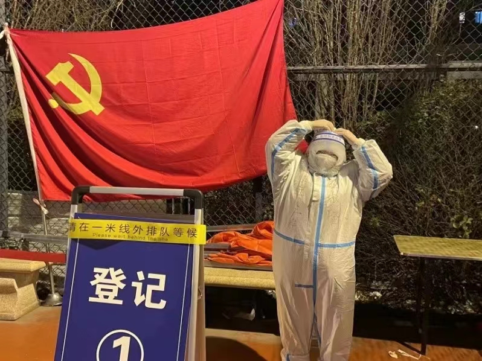

工作感悟：天津津南的疫情牵动全市人民群众的心，这是一次与病毒的较量、也是一次与时间的赛跑。作为天津工业大学的一名教师党员，也作为深处津南疫区的一名普通公民，更应积极参与津南防疫工作。在看到社区微信群中需要进行困难群众物资运输时，第一时间就报名参加。由于道路管制，物资无法从市区直接抵达津南，在津南区民政部门的组织下和其他志愿者一起，历经4个小时完成7.5吨物资的转运。我所在的知香园社区属于防疫管控区域，核酸筛查次数多任务重，我也积极参与知香园社区六筛、七筛志愿者活动，对核酸检测人员进行信息登记，确保应检尽检，不漏一人，控制传染源，将疫情扩散可能性降到最低。户外温度虽然很低，但医护人员和志愿者们温暖着整个社区。感恩所有在这场没有硝烟的战斗中替我们守护家乡的英雄们，天津加油！津南加油！
